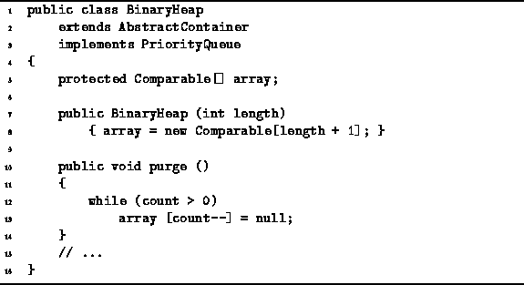

Data Structures and Algorithms
with Object-Oriented Design Patterns in Java
Data Structures and Algorithms
with Object-Oriented Design Patterns in Java
Program  defines the BinaryHeap constructor.
The constructor takes a single argument of type int which
specifies the maximum capacity of the binary heap.
The constructor allocates an array of the specified size plus one.
This is done because array position zero will not be used.
The running time of the constructor is O(n),
where n is the maximum length of the priority queue.
defines the BinaryHeap constructor.
The constructor takes a single argument of type int which
specifies the maximum capacity of the binary heap.
The constructor allocates an array of the specified size plus one.
This is done because array position zero will not be used.
The running time of the constructor is O(n),
where n is the maximum length of the priority queue.

Program: BinaryHeap class constructor and purge methods.
The purpose of the purge method is to make the priority queue empty. The purge method assigns the value null to the array positions one-by-one. Clearly the worst-case running time for the purge method is O(n), where n is the maximum length of the priority queue.
 Copyright © 1998 by Bruno R. Preiss, P.Eng. All rights reserved.
Copyright © 1998 by Bruno R. Preiss, P.Eng. All rights reserved.